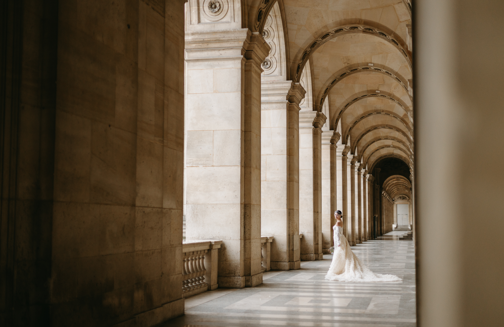

Info
Questions fréquentes
Chaque événement est unique, raison pour laquelle mes prestations sont entièrement adaptées à vos besoins et à vos attentes. Contactez-moi pour recevoir un devis personnalisé.
Les photographies HD sont livrées sous un (1) mois maximum après le jour du mariage, sur une galerie privée en ligne protégée par mot de passe. Les galeries sont archivées pendant 6 mois.
Je suis basée à Grenoble, mais je me déplace partout en France et à l'étranger. Les frais de déplacement sont offerts dans un rayon de 20 km autour de Grenoble et de Lyon.
Il est préférable de réserver votre date le plus tôt possible. Il m'arrive toutefois d'accepter des demandes de dernière minute, selon mes disponibilités.
J'utilise des appareils numériques Canon R et Canon R6 avec plusieurs objectifs, ainsi que l'appareil argentique Contax G2 pour une touche intemporelle.
Une autre question ?
Écrivez-moi